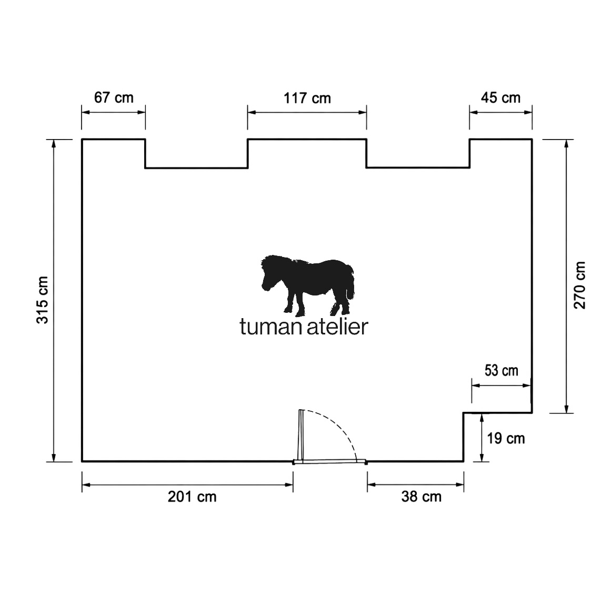

Tuman Atelier
Mariensztat 15/2
Warsaw, Poland
Opening Hours:
currently closed
Next opening: December
„I stay winning” – to motto Victorii Normal, wyrażane niejawnie w tym, jak się porusza, jak chodzi i jak mówi. To, co mnie w niej drażni, to fakt, że w żaden sposób nie próbuje się wyróżniać, a jej normalność wydaje się na swój sposób wręcz brutalna. Jakby była jakimś wzorcem, opanowana standardowym sposobem na wszystko. Jakimś szablonem sukcesu. Mogłoby się wydawać, że każdy chce być inny, wyjątkowy. Cóż, jeśli zatrzymasz się przy samej koncepcji wygrywania, zdasz sobie sprawę, że nie ma w niej wcale tak dużej różnorodności. To w gruncie rzeczy bardzo standardowa sprawa. Gogogogogo.
— tekst Zuzia Kiksa